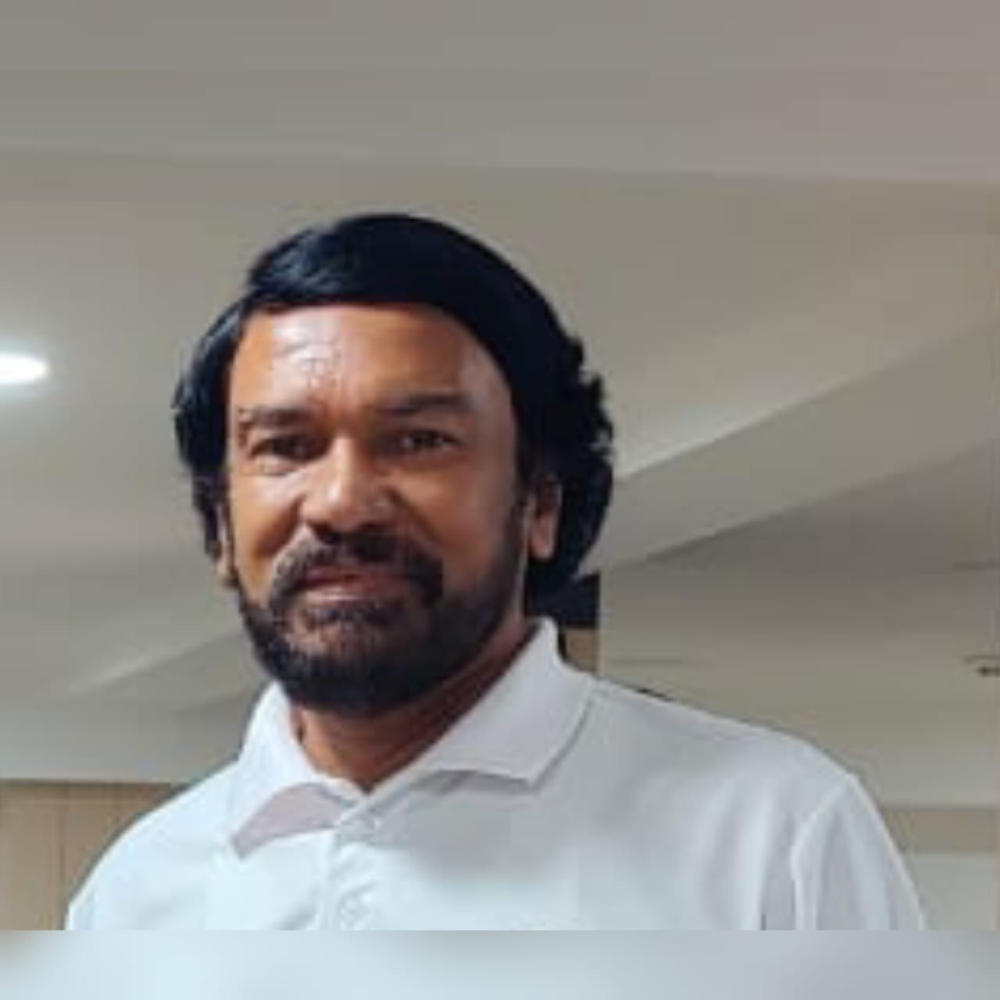
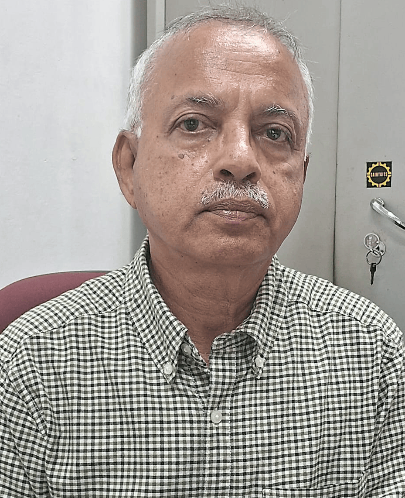
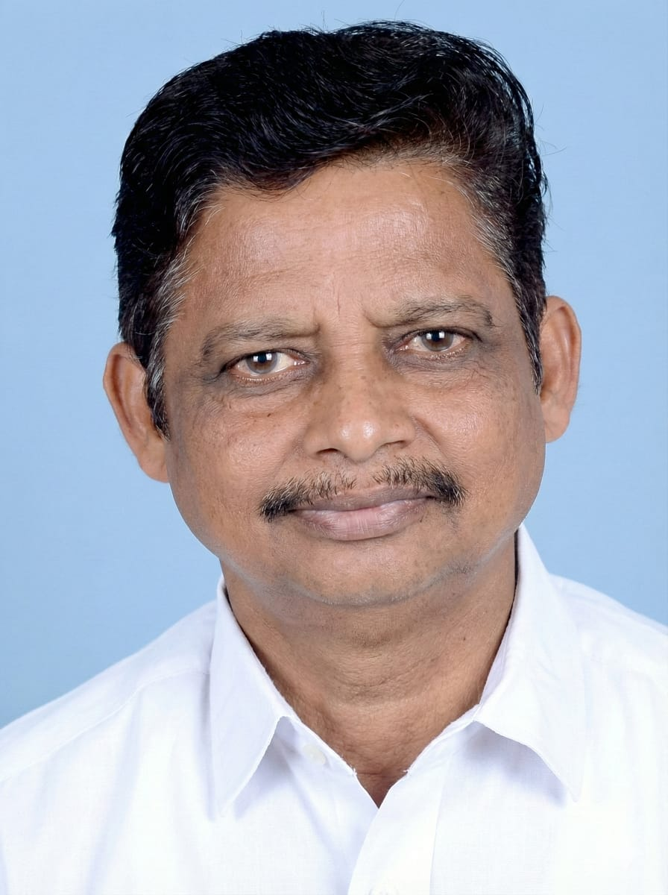

Management team and Board of Directors
Prof. (Dr.) K P Joy ChairmanFormer Chairman, State Environment Impact Assessment Authority, Principal of a Post Graduate College, Former Member Syndicate and Pollution Control Board, Former Director of Environmental Studies of M.G. University and Kannur University |
Dr. Kurian P Abraham Managing DirectorVice President, Sri Devi Resolutions Pvt. Ltd. Former General Manager, Corporation Bank (now Union Bank of India), Former Member, Advisory Board MRL Ltd., Hyderabad and Former CEO of, Muthoottu Mini Financiers Ltd. and NCS Finance (NBFCs). |
Sri. K S Harikumar PresidentDebenture Trustee, Muthoottu Mini Financiers Ltd. Former General Manager of Federal Bank, Former Chief Regional Manager of Manappuram Finance Ltd. |

Sri. A I James DirectorFormer AGM, Corporation Bank (now Union Bank of India), Former Whole time Director & Company Secretary- Corp Bank Securities Ltd., General Manager (Finance) and CS in NBFC. |
|

Sri. P Koshy DirectorPurchase manager, Saintgits Group of Engineering Colleges and Former Manager, Punjab National Bank. |

Sri. K D George DirectorManaging Director KDG Ventures, Vytilla Jn, Ernakulam. |

Sri. Ramachandran Nair Director'A' class Electrical and AC Contractor PWD, Govt. of Kerala |